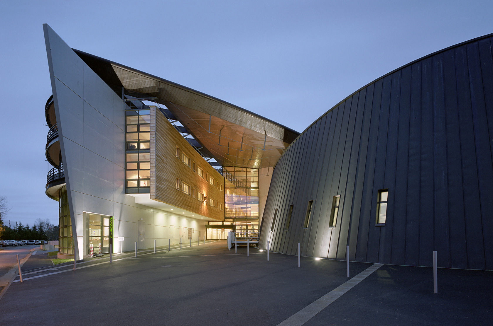

Des fiches par matière
Onze matières, un dossier par matière. Chaque fiche est téléchargeable en un clic, à la maison comme au CDI, et reste disponible toute l'année.

Toutes les fiches de révision de la classe, rangées par matière, au même endroit. Un seul objectif : arriver prêts aux épreuves anticipées de français et de maths.
Ce site a été créé par et pour les élèves de la 1ère 2. Il rassemble les fiches de révision de toutes nos matières et sert de base de travail commune pour l'année de première — l'année des épreuves anticipées.
Onze matières, un dossier par matière. Chaque fiche est téléchargeable en un clic, à la maison comme au CDI, et reste disponible toute l'année.
De nouvelles fiches sont ajoutées à chaque période de révisions, pour que personne ne se retrouve seul devant un chapitre la veille du contrôle.
Ce qu'un élève comprend, toute la classe peut en profiter. Les fiches circulent au lieu de rester dans un classeur.
En classe de première, deux épreuves du baccalauréat se passent dès la fin de l'année. C'est autour d'elles que ce site est organisé.
L'écrit et l'oral se préparent toute l'année : les textes du descriptif, les œuvres au programme, la méthode du commentaire, de la dissertation et de l'entretien. Les fiches de français regroupent l'essentiel, œuvre par œuvre et méthode par méthode.
Le programme de spécialité est dense et chaque chapitre s'appuie sur le précédent. Les fiches servent à garder les définitions, les théorèmes et les méthodes de calcul sous la main, pour ne pas repartir de zéro à chaque révision.
Toutes les fiches disponibles sont sur la page téléchargements, triées par matière et filtrables.